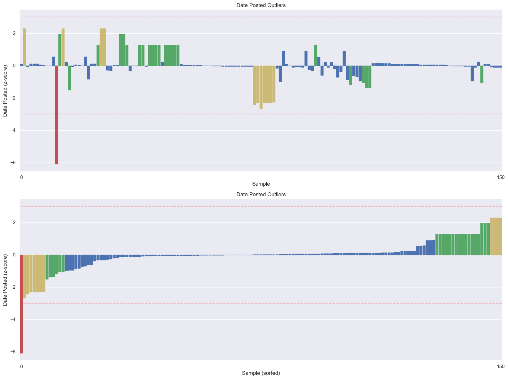
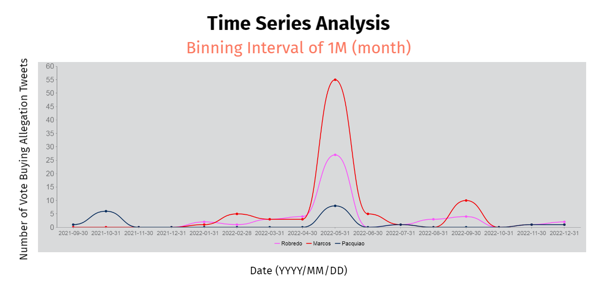
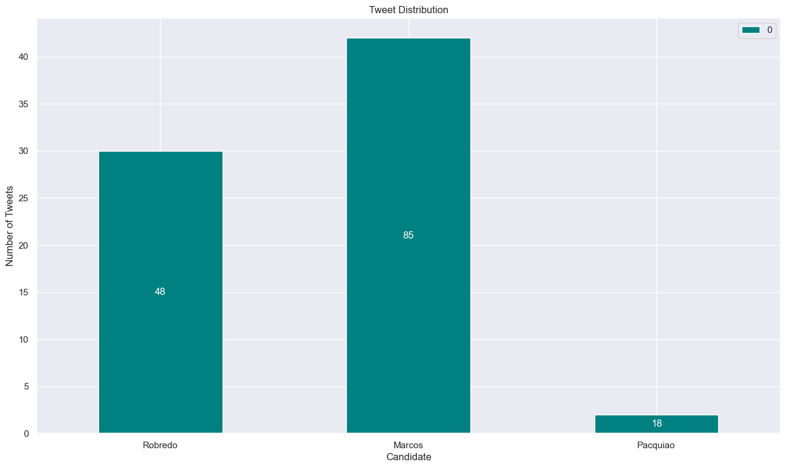
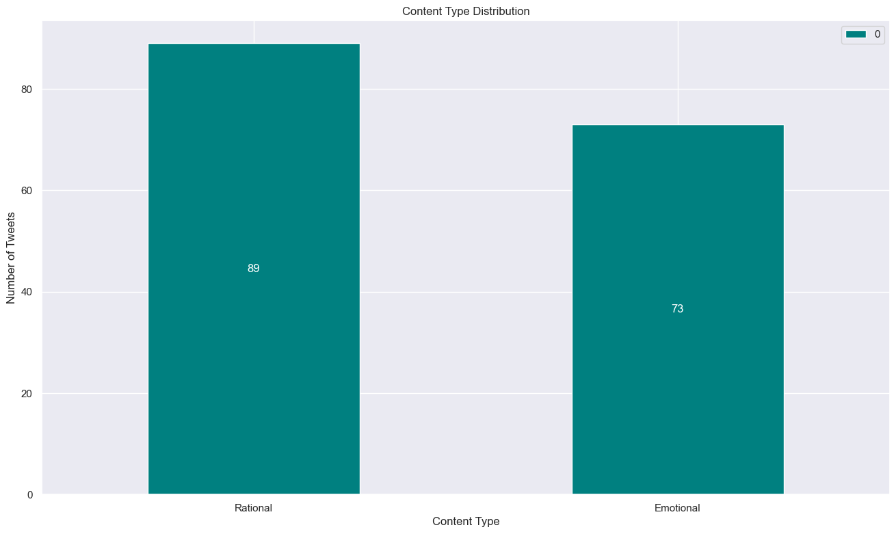
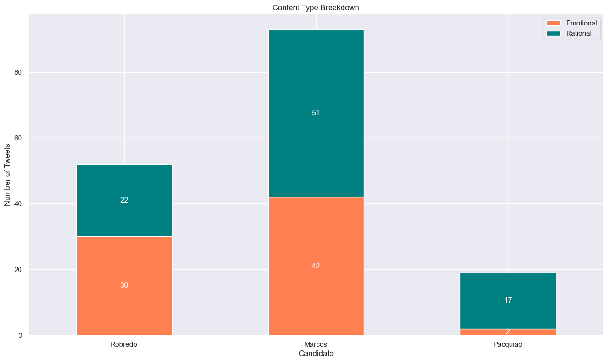
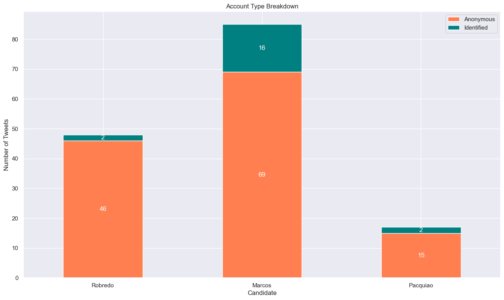
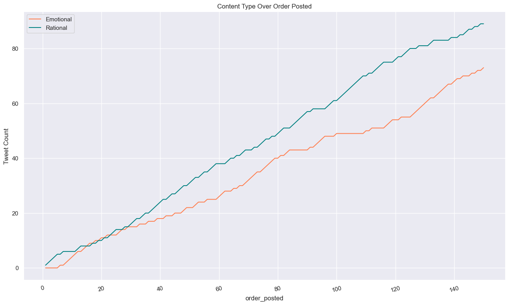

Data Exploration
After we collected enough data to analyze, we need to explore the data we've
collected and make sure that it is clean and appropriate for our research objectives
before we jump to modeling and analysis.
Data Preprocessing
Handling Missing Values
Some columns during our data collection had missing data. After some careful discussion,
we concluded that some of these columns were not relevant to our study hence we decided
to remove some of them. The remaining columns that were relevant to our study, had no missing values.
Ensuring Formatting Consistency
Upon inspection of our data, we discovered that formats involving time and date were not constant.
This was going to be a problem in the future when conducting statistical analysis. We manually went
through our dataset and corrected the format to better suit our needs.
Categorical Data Encoding for Candidates
One thing we did with our data was to identify which presidential candidate was being accused of
allegations of vote buying in the tweet. We decided to use
categorical data encoding for each tweet assigning the tweet to be either about
Marcos,
Robredo,
Pacquiao or a mix of any of the three.
More Categorical Data Encoding
In our data encoding process, we categorized columns into categorical data, such as content type
(Rational or Emotional) for tweets. We also applied categorical data encoding to other columns
like Tweet Type, Account Type, and Rating. This approach improved our dataset analysis by organizing
and understanding the data based on different categories.
Outliers in the Data
In order to determine if there were any outliers in our data, we used the date posted as the column index.
After obtaining their mean and standard deviation, we were able to tabulate the z-scores of every date in
the data. Through this we were able to discover 1 outlier data. This row
was then removed and not replaced since we had a surplus of data collected during the initial collection.

Time Series Analysis
The purpose of time series analysis is to understand insights from data that is collected over time.
In our topic, since we are using categorical data, we opted to use the Binning method. With a binning
interval of 1 month, we were able to observe and analyze long-term trends over time. This was done by
ensuring that the Date posted column was converted to the datetime Python format. After that, making us
of Pandas, we were able to create a new data frame with the binned time series analysis assigning it a
bin size of 1M or 1 Month. Finally using the pd.Grouper function from the Pandas library to specify the
grouping frequency for the time series data, we came up with the results below. Which we then tabulated
into a graph manually.
| Index |
Date Posted |
Robredo |
Marcos |
Pacquiao |
| 0 | 2021-09-30 | 0 | 0 | 1 |
| 1 | 2021-10-31 | 0 | 0 | 6 |
| 2 | 2021-11-30 | 0 | 0 | 0 |
| 3 | 2021-12-31 | 0 | 0 | 0 |
| 4 | 2022-01-31 | 2 | 1 | 0 |
| 5 | 2022-02-28 | 1 | 5 | 0 |
| 6 | 2022-03-31 | 3 | 3 | 0 |
| 7 | 2022-04-30 | 4 | 3 | 0 |
| 8 | 2022-05-31 | 27 | 55 | 8 |
| 9 | 2022-06-30 | 0 | 5 | 0 |
| 10 | 2022-07-31 | 1 | 1 | 1 |
| 11 | 2022-08-31 | 3 | 0 | 0 |
| 12 | 2022-09-30 | 4 | 10 | 0 |
| 13 | 2022-10-31 | 0 | 0 | 0 |
| 14 | 2022-11-30 | 1 | 1 | 1 |
| 15 | 2022-12-31 | 2 | 1 | 1 |

Natural Language Processing
Tokenizing and Lower Casing
During this process, we had to translate the tweets first into English. We used googletrans to
translate the tweets into English. If we found the translation to be inappropriate or inaccurate,
we manually translated the tweet ourselves. The tweets were then lowercased and had the punctuation
marks removed. Afterwards, it was then tokenized with the NLTK Python library using its tokenize module.
Stemming and Lemmatization
To cater for future interest in text analysis, we deemed it necessary to reduce the number of vocabulary
in the tweets. After the previous step, we then used the NLTK library for its PorterStemmer and
WordNetLemmatizer modules to be able to reduce the words back to their base or root forms. One benefit
of this is that this simplification can improve the efficiency of text processing tasks and reduce the
computational resources required if we wish to pursue an in-depth text analysis of the tweets collected.
Data Visualizations

The plot above presents that most of the tweets collected accused Marcos
(85 tweets). Then, Robredo (48 tweets).
Lastly, Pacquiao had the least amount (18 tweets).

The plot above visualizes the distribution of the content type of the collected tweets. We can observe that majority
of the collected tweets are Rational (89 tweets). On the other hand,
collected tweets that are Emotional only amount to 73 tweets.

The plot visualizes the breakdown of the content type of the collected tweets among the Candidates.
The plot visualizes the breakdown of the content type of the collected tweets among the Candidates.
For Robredo, we can see that majority of the collected tweets accusing
the candidate are Emotional tweets (30 tweets). On the other hand,
collected tweets that are Emotional and accusing the candidate only amount
to 22 tweets.
For Marcos, we can see that majority of the collected tweets accusing
the candidate are Rational tweets (51 tweets). On the other hand, collected
tweets that are Emotional and accusing the candidate only amount to 42
tweets.
For Pacquiao, we can see that majority of the collected tweets accusing
the candidate are Rational tweets (17 tweets). On the other hand,
collected tweets that are Emotional and accusing the candidate only
amount to 2 tweets.

The plot visualizes the breakdown of the account type of the collected tweets among the Candidates.
Majority of the collected tweets came from anonymous accounts (131).
For tweets alleging Robredo of vote buying, 46 came from
Anonymous accounts.
For tweets alleging Marcos of vote buying, 69 came from
Anonymous accounts.
For tweets alleging Pacquiao of vote buying, 15 came from
Anonymous accounts.

The plot visualizes the growth of the number of tweets of a certain Content Type over *time. It is not
technically over time since the x-axis is the order in which the tweet is posted (the tweets are
chronologically ordered then labelled incrementally in ascending order).
We can see that the tweets that are Rational has a greater growth rate than the tweets that are Emotional.
View Our Dataset Here